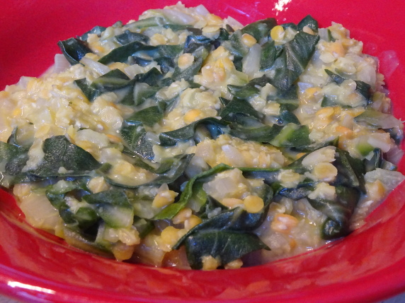

Linsen-Mangold-Curry

- Zubereitung: ca. 20 Minuten
- Für 4 Personen
Zutaten
- 250 g Mangold
- 250 g Linsen, rot
- 2 Knoblauchzehen
- 2 Zwiebeln
- 2 EL Sesam
- 2 EL Butter
- 400 ml Kokosmilch
- 400 ml Gemüsebrühe
- Ingwer, 2 bis 3 cm
- 2 EL Zitronensaft
- 1 TL Kreuzkümmel
- 1/2 TL Kurkuma
Zubereitung
- Den Mangold putzen und waschen. Die Stiele würfeln und die Blätter in Streifen schneiden. Zwiebeln, Knoblauch und Ingwer schälen. Zwiebeln würfeln, Knoblauch und Ingwer hacken. Die Linsen in einem Sieb durchspülen und abtropfen lassen.
- Die Butter erhitzen und Zwiebeln, Knoblauch und Ingwer darin glasig anschwitzen. Sesam, Kreuzkümmel und Kurkuma dazugeben und kurz mitbraten. Linsen, Mangold, Kokosmilch und Brühe dazugeben. Mit Salz würzen und alles etwa 15 Minuten bei mittlerer
Hitze kochen.
- Vor dem Servieren das Curry mit Salz und Zitronensaft abschmecken.
Quelle: https://www.chefkoch.de/rezepte/1530241258527897/Linsen-Mangold-Curry.html